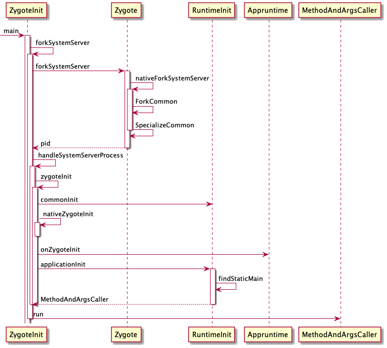
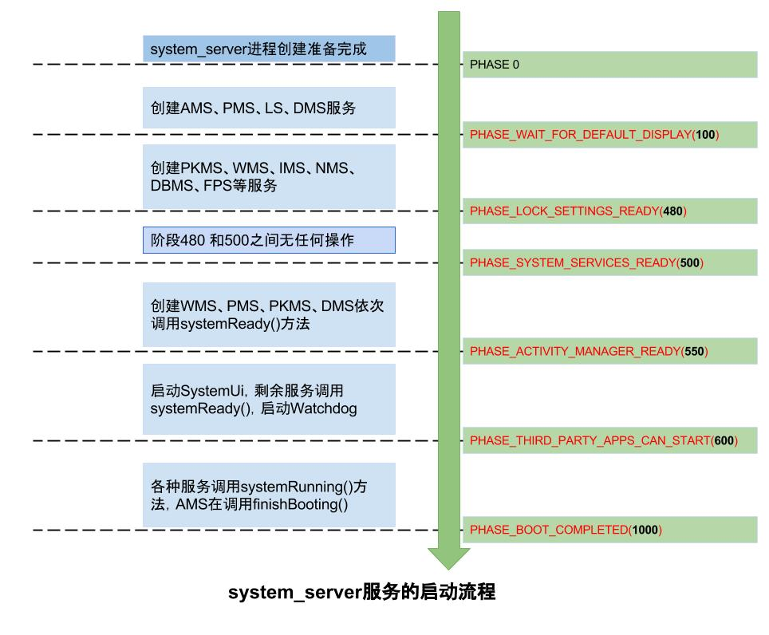
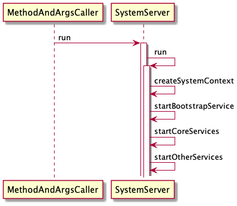

SystemServer
Contents
前言
在 Zygote 这篇文章中，我们提到 Zygote 会创建 SystemServer 进程，当时我们没有去了解。
今天就来聊一聊 SystemServer 。
Zygote
先来回顾一下 Zygote 启动 SystemServer 的代码在哪里
/frameworks/base/core/java/com/android/internal/os/ZygoteInit.java
public static void main(String argv[]) {
// ...
if (startSystemServer) {
// 创建 SystemServer 进程
Runnable r = forkSystemServer(abiList, zygoteSocketName, zygoteServer);
if (r != null) {
r.run();
return;
}
}
Log.i(TAG, "Accepting command socket connections");
}
在 ZygoteInit 的 main 方法中会调用 forkSystemServer ，所以我们要从这里入手，看看 SystemServer 是怎么启动的。
Zygote -> SystemServer
/frameworks/base/core/java/com/android/internal/os/ZygoteInit.java
private static Runnable forkSystemServer(String abiList, String socketName,
ZygoteServer zygoteServer) {
// ...
String args[] = {
"--setuid=1000",
"--setgid=1000",
"--setgroups=1001,1002,1003,1004,1005,1006,1007,1008,1009,1010,1018,1021,1023,"
+ "1024,1032,1065,3001,3002,3003,3006,3007,3009,3010",
"--capabilities=" + capabilities + "," + capabilities,
"--nice-name=system_server",
"--runtime-args",
"--target-sdk-version=" + VMRuntime.SDK_VERSION_CUR_DEVELOPMENT,
"com.android.server.SystemServer",
};
ZygoteArguments parsedArgs = null;
int pid;
try {
parsedArgs = new ZygoteArguments(args);
Zygote.applyDebuggerSystemProperty(parsedArgs);
Zygote.applyInvokeWithSystemProperty(parsedArgs);
boolean profileSystemServer = SystemProperties.getBoolean(
"dalvik.vm.profilesystemserver", false);
if (profileSystemServer) {
parsedArgs.mRuntimeFlags |= Zygote.PROFILE_SYSTEM_SERVER;
}
// fork 子进程，uid=1000,gid=1000, 进程名=system_server
pid = Zygote.forkSystemServer(
parsedArgs.mUid, parsedArgs.mGid,
parsedArgs.mGids,
parsedArgs.mRuntimeFlags,
null,
parsedArgs.mPermittedCapabilities,
parsedArgs.mEffectiveCapabilities);
} catch (IllegalArgumentException ex) {
throw new RuntimeException(ex);
}
// 0 表示子进程
if (pid == 0) {
// 关闭从 Zygote 继承下来的 ServerSocket，因为用不到
zygoteServer.closeServerSocket();
return handleSystemServerProcess(parsedArgs);
}
return null;
}
从 args 中，我们能看出来 system server 的 uid=1000 ， gid=1000 ，进程名为 system_server ，这里要注意最后一个参数 com.android.server.SystemServer 在后边会用到。
在参数准备好之后，会调用 Zygote.forkSystemServer 从而创建了 SystemServer 进程。跟进去看下是如何创建的
forkSystemServer
/frameworks/base/core/java/com/android/internal/os/Zygote.java
public static int forkSystemServer(int uid, int gid, int[] gids, int runtimeFlags,
int[][] rlimits, long permittedCapabilities, long effectiveCapabilities) {
ZygoteHooks.preFork();
resetNicePriority();
int pid = nativeForkSystemServer(
uid, gid, gids, runtimeFlags, rlimits,
permittedCapabilities, effectiveCapabilities);
// Enable tracing as soon as we enter the system_server.
if (pid == 0) {
Trace.setTracingEnabled(true, runtimeFlags);
}
ZygoteHooks.postForkCommon();
return pid;
}
private static native int nativeForkSystemServer(int uid, int gid, int[] gids, int runtimeFlags,
int[][] rlimits, long permittedCapabilities, long effectiveCapabilities);
在 forkSystemServer 中通过 JNI 调用 nativeForkSystemServer 把 fork 任务交给了 Native 。
nativeForkSystemServer
/frameworks/base/core/jni/com_android_internal_os_Zygote.cpp
static jint com_android_internal_os_Zygote_nativeForkSystemServer(
JNIEnv* env, jclass, uid_t uid, gid_t gid, jintArray gids,
jint runtime_flags, jobjectArray rlimits, jlong permitted_capabilities,
jlong effective_capabilities) {
// ...
pid_t pid = ForkCommon(env, true,
fds_to_close,
fds_to_ignore);
if (pid == 0) {
SpecializeCommon(env, uid, gid, gids, runtime_flags, rlimits,
permitted_capabilities, effective_capabilities,
MOUNT_EXTERNAL_DEFAULT, nullptr, nullptr, true,
false, nullptr, nullptr);
} else if (pid > 0) {
// 父进程
gSystemServerPid = pid;
int status;
// 如果 system server 死亡，重启 Zygote
if (waitpid(pid, &status, WNOHANG) == pid) {
RuntimeAbort(env, __LINE__, "System server process has died. Restarting Zygote!");
}
}
return pid;
}
在 nativeForkSystemServer 中调用了 ForkCommon 创建子进程，然后在进程中调用 SpecializeCommon 。
Zygote 进程会检测 SystemServer 是否死亡，如果死亡则重启 Zygote ，生死与共。
ForkCommon
/frameworks/base/core/jni/com_android_internal_os_Zygote.cpp
static pid_t ForkCommon(JNIEnv* env, bool is_system_server,
const std::vector<int>& fds_to_close,
const std::vector<int>& fds_to_ignore) {
// 设置 single 信号处理函数
SetSignalHandlers();
auto fail_fn = std::bind(ZygoteFailure, env, is_system_server ? "system_server" : "zygote",
nullptr, _1);
BlockSignal(SIGCHLD, fail_fn);
__android_log_close();
stats_log_close();
if (gOpenFdTable == nullptr) {
gOpenFdTable = FileDescriptorTable::Create(fds_to_ignore, fail_fn);
} else {
gOpenFdTable->Restat(fds_to_ignore, fail_fn);
}
android_fdsan_error_level fdsan_error_level = android_fdsan_get_error_level();
// 创建子进程
pid_t pid = fork();
if (pid == 0) {
PreApplicationInit();
// 关闭描述符
DetachDescriptors(env, fds_to_close, fail_fn);
ClearUsapTable();
gOpenFdTable->ReopenOrDetach(fail_fn);
android_fdsan_set_error_level(fdsan_error_level);
} else {
ALOGD("Forked child process %d", pid);
}
UnblockSignal(SIGCHLD, fail_fn);
return pid;
}
在 ForkCommon 进行了真正的 fork 创建了 system server 。
SpecializeCommon
/frameworks/base/core/jni/com_android_internal_os_Zygote.cpp
static void SpecializeCommon(JNIEnv* env, uid_t uid, gid_t gid, jintArray gids,
jint runtime_flags, jobjectArray rlimits,
jlong permitted_capabilities, jlong effective_capabilities,
jint mount_external, jstring managed_se_info,
jstring managed_nice_name, bool is_system_server,
bool is_child_zygote, jstring managed_instruction_set,
jstring managed_app_data_dir) {
const char* process_name = is_system_server ? "system_server" : "zygote";
SetInheritable(permitted_capabilities, fail_fn);
DropCapabilitiesBoundingSet(fail_fn);
bool use_native_bridge = !is_system_server &&
instruction_set.has_value() &&
android::NativeBridgeAvailable() &&
android::NeedsNativeBridge(instruction_set.value().c_str());
if (use_native_bridge && !app_data_dir.has_value()) {
use_native_bridge = false;
ALOGW("Native bridge will not be used because managed_app_data_dir == nullptr.");
}
MountEmulatedStorage(uid, mount_external, use_native_bridge, fail_fn);
if (!is_system_server && getuid() == 0) {
// 不是 system_server 的子进程，则创建进程组
const int rc = createProcessGroup(uid, getpid());
}
// 设置 group
SetGids(env, gids, fail_fn);
// 设置资源 limit
SetRLimits(env, rlimits, fail_fn);
SetCapabilities(permitted_capabilities, effective_capabilities, permitted_capabilities, fail_fn);
// 设置调度策略
SetSchedulerPolicy(fail_fn);
__android_log_close();
stats_log_close();
const char* se_info_ptr = se_info.has_value() ? se_info.value().c_str() : nullptr;
const char* nice_name_ptr = nice_name.has_value() ? nice_name.value().c_str() : nullptr;
// 设置 selinux 上下文
if (selinux_android_setcontext(uid, is_system_server, se_info_ptr, nice_name_ptr) == -1) {
fail_fn(CREATE_ERROR("selinux_android_setcontext(%d, %d, \"%s\", \"%s\") failed",
uid, is_system_server, se_info_ptr, nice_name_ptr));
}
if (nice_name.has_value()) {
SetThreadName(nice_name.value());
} else if (is_system_server) {
SetThreadName("system_server");
}
// 把 signal 设置为默认函数
UnsetChldSignalHandler();
if (is_system_server) {
env->CallStaticVoidMethod(gZygoteClass, gCallPostForkSystemServerHooks);
if (env->ExceptionCheck()) {
fail_fn("Error calling post fork system server hooks.");
}
env->CallStaticVoidMethod(gZygoteInitClass, gCreateSystemServerClassLoader);
if (env->ExceptionCheck()) {
env->ExceptionClear();
}
static const char* kSystemServerLabel = "u:r:system_server:s0";
if (selinux_android_setcon(kSystemServerLabel) != 0) {
fail_fn(CREATE_ERROR("selinux_android_setcon(%s)", kSystemServerLabel));
}
}
env->CallStaticVoidMethod(gZygoteClass, gCallPostForkChildHooks, runtime_flags,
is_system_server, is_child_zygote, managed_instruction_set);
if (env->ExceptionCheck()) {
fail_fn("Error calling post fork hooks.");
}
}
System Server 创建好了，就需要去处理自己的事情了，在文章开头中 System Server 创建好了之后，会调用 handleSystemServerProcess 去完成自己的使命。
handleSystemServerProcess
/frameworks/base/core/java/com/android/internal/os/ZygoteInit.java
private static Runnable handleSystemServerProcess(ZygoteArguments parsedArgs) {
// set umask to 0077 so new files and directories will default to owner-only permissions.
Os.umask(S_IRWXG | S_IRWXO);
if (parsedArgs.mNiceName != null) {
Process.setArgV0(parsedArgs.mNiceName);
}
final String systemServerClasspath = Os.getenv("SYSTEMSERVERCLASSPATH");
if (systemServerClasspath != null) {
// 优化 dex
if (performSystemServerDexOpt(systemServerClasspath)) {
sCachedSystemServerClassLoader = null;
}
boolean profileSystemServer = SystemProperties.getBoolean(
"dalvik.vm.profilesystemserver", false);
if (profileSystemServer && (Build.IS_USERDEBUG || Build.IS_ENG)) {
try {
prepareSystemServerProfile(systemServerClasspath);
} catch (Exception e) {
Log.wtf(TAG, "Failed to set up system server profile", e);
}
}
}
if (parsedArgs.mInvokeWith != null) {
String[] args = parsedArgs.mRemainingArgs;
if (systemServerClasspath != null) {
String[] amendedArgs = new String[args.length + 2];
amendedArgs[0] = "-cp";
amendedArgs[1] = systemServerClasspath;
System.arraycopy(args, 0, amendedArgs, 2, args.length);
args = amendedArgs;
}
// 启动应用进程
WrapperInit.execApplication(parsedArgs.mInvokeWith,
parsedArgs.mNiceName, parsedArgs.mTargetSdkVersion,
VMRuntime.getCurrentInstructionSet(), null, args);
throw new IllegalStateException("Unexpected return from WrapperInit.execApplication");
} else {
// 创建类加载器
createSystemServerClassLoader();
ClassLoader cl = sCachedSystemServerClassLoader;
if (cl != null) {
Thread.currentThread().setContextClassLoader(cl);
}
// SystemServer 进入此分支
return ZygoteInit.zygoteInit(parsedArgs.mTargetSdkVersion,
parsedArgs.mRemainingArgs, cl);
}
}
在 handleSystemServerProcess 会对 dex 进行优化， systemServerClasspath 环境变量主要有 /system/framwork 下的 services.jar 、 ethernet-service.jar 、 wif-service.jar
然后创建类加载器，最后调用 ZygoteInit.zygoteInit 。
performSystemServerDexOpt
/frameworks/base/core/java/com/android/internal/os/ZygoteInit.java
private static boolean performSystemServerDexOpt(String classPath) {
final String[] classPathElements = classPath.split(":");
final IInstalld installd = IInstalld.Stub
.asInterface(ServiceManager.getService("installd"));
final String instructionSet = VMRuntime.getRuntime().vmInstructionSet();
String classPathForElement = "";
boolean compiledSomething = false;
for (String classPathElement : classPathElements) {
String systemServerFilter = SystemProperties.get(
"dalvik.vm.systemservercompilerfilter", "speed");
int dexoptNeeded;
try {
dexoptNeeded = DexFile.getDexOptNeeded(
classPathElement, instructionSet, systemServerFilter,
null /* classLoaderContext */, false /* newProfile */,
false /* downgrade */);
} catch (FileNotFoundException ignored) {
continue;
} catch (IOException e) {
dexoptNeeded = DexFile.NO_DEXOPT_NEEDED;
}
if (dexoptNeeded != DexFile.NO_DEXOPT_NEEDED) {
final String packageName = "*";
final String outputPath = null;
final int dexFlags = 0;
final String compilerFilter = systemServerFilter;
final String uuid = StorageManager.UUID_PRIVATE_INTERNAL;
final String seInfo = null;
final String classLoaderContext =
getSystemServerClassLoaderContext(classPathForElement);
final int targetSdkVersion = 0; // SystemServer targets the system's SDK version
try {
installd.dexopt(classPathElement, Process.SYSTEM_UID, packageName,
instructionSet, dexoptNeeded, outputPath, dexFlags, compilerFilter,
uuid, classLoaderContext, seInfo, false /* downgrade */,
targetSdkVersion, /*profileName*/ null, /*dexMetadataPath*/ null,
"server-dexopt");
compiledSomething = true;
} catch (RemoteException | ServiceSpecificException e) {
Log.w(TAG, "Failed compiling classpath element for system server: "
+ classPathElement, e);
}
}
classPathForElement = encodeSystemServerClassPath(
classPathForElement, classPathElement);
}
return compiledSomething;
}
使用 socket 通信将优化操作交给 installed 执行。
zygoteInit
/frameworks/base/core/java/com/android/internal/os/ZygoteInit.java
public static final Runnable zygoteInit(int targetSdkVersion, String[] argv,
ClassLoader classLoader) {
RuntimeInit.redirectLogStreams();
RuntimeInit.commonInit();
ZygoteInit.nativeZygoteInit();
return RuntimeInit.applicationInit(targetSdkVersion, argv, classLoader);
}
commonInit
/frameworks/base/core/java/com/android/internal/os/RuntimeInit.java
protected static final void commonInit() {
LoggingHandler loggingHandler = new LoggingHandler();
RuntimeHooks.setUncaughtExceptionPreHandler(loggingHandler);
// 设置默认异常未捕获处理方法
Thread.setDefaultUncaughtExceptionHandler(new KillApplicationHandler(loggingHandler));
// 设置时区
RuntimeHooks.setTimeZoneIdSupplier(() -> SystemProperties.get("persist.sys.timezone"));
LogManager.getLogManager().reset();
new AndroidConfig();
// 设置 http userAgent
String userAgent = getDefaultUserAgent();
System.setProperty("http.agent", userAgent);
// 设置 socket tag， 用于流量统计
NetworkManagementSocketTagger.install();
initialized = true;
}
nativeZygoteInit
/frameworks/base/core/jni/AndroidRuntime.cpp
static void com_android_internal_os_ZygoteInit_nativeZygoteInit(JNIEnv* env, jobject clazz)
{
gCurRuntime->onZygoteInit();
}
gCurRuntime 是 AppRuntime 在 Zygote 中有提到。所以 onZygoteInit 其实是 AppRuntime 的方法，他在 app_main.cpp 中。
/frameworks/base/cmds/app_process/app_main.cpp
virtual void onZygoteInit()
{
sp<ProcessState> proc = ProcessState::self();
ALOGV("App process: starting thread pool.\n");
proc->startThreadPool(); // 启动线程池
}
在 onZygoteInit 方法中，主要启动了线程池，熟悉 Binder 的应该不陌生，在 ProcessState 中会打开 Binder 驱动，并调用 mmap 进行内核空间地址的映射。
applicationInit
/frameworks/base/core/java/com/android/internal/os/RuntimeInit.java
protected static Runnable applicationInit(int targetSdkVersion, String[] argv,
ClassLoader classLoader) {
nativeSetExitWithoutCleanup(true);
VMRuntime.getRuntime().setTargetHeapUtilization(0.75f);
VMRuntime.getRuntime().setTargetSdkVersion(targetSdkVersion);
final Arguments args = new Arguments(argv);
Trace.traceEnd(Trace.TRACE_TAG_ACTIVITY_MANAGER);
return findStaticMain(args.startClass, args.startArgs, classLoader);
}
这里的 startClass 是 com.android.server.SystemServer ，在文章开头中有提到过。
findStaticMain
/frameworks/base/core/java/com/android/internal/os/RuntimeInit.java
protected static Runnable findStaticMain(String className, String[] argv,
ClassLoader classLoader) {
Class<?> cl;
try {
cl = Class.forName(className, true, classLoader);
} catch (ClassNotFoundException ex) {
throw new RuntimeException(
"Missing class when invoking static main " + className,
ex);
}
Method m;
try {
m = cl.getMethod("main", new Class[] { String[].class });
} catch (NoSuchMethodException ex) {
throw new RuntimeException(
"Missing static main on " + className, ex);
} catch (SecurityException ex) {
throw new RuntimeException(
"Problem getting static main on " + className, ex);
}
int modifiers = m.getModifiers();
if (! (Modifier.isStatic(modifiers) && Modifier.isPublic(modifiers))) {
throw new RuntimeException(
"Main method is not public and static on " + className);
}
return new MethodAndArgsCaller(m, argv);
}
查找 com.android.server.SystemServer 中的 main 方法。然后创建了 MethodAndArgsCaller ，它是个内部静态类。
MethodAndArgsCaller
/frameworks/base/core/java/com/android/internal/os/RuntimeInit.java
static class MethodAndArgsCaller implements Runnable {
/** method to call */
private final Method mMethod;
/** argument array */
private final String[] mArgs;
public MethodAndArgsCaller(Method method, String[] args) {
mMethod = method;
mArgs = args;
}
public void run() {
try {
mMethod.invoke(null, new Object[] { mArgs });
} catch (IllegalAccessException ex) {
throw new RuntimeException(ex);
} catch (InvocationTargetException ex) {
Throwable cause = ex.getCause();
if (cause instanceof RuntimeException) {
throw (RuntimeException) cause;
} else if (cause instanceof Error) {
throw (Error) cause;
}
throw new RuntimeException(ex);
}
}
}
MethodAndArgsCaller 实现了 Runnable ，在 run 方法中，调用了上一步找到的 main 方法。但是我们并没有发现有地方调用了 run 方法。
我们往上走一路溯源到 Zygote 中，发现了 run 方法的调用，也就是文章的最开头。乍一看可能会以为是个线程，其实不是只是个普通调用。就像 Handler 中的 Callback 一样，都是普通方法调用。
public static void main(String argv[]) {
ZygoteServer zygoteServer = null;
// 通过 Socket 方式创建 ZygoteServer
zygoteServer = new ZygoteServer(isPrimaryZygote);
if (startSystemServer) {
// 创建 SystemServer 进程
Runnable r = forkSystemServer(abiList, zygoteSocketName, zygoteServer);
if (r != null) {
r.run(); // 调用 run
return;
}
}
}
run 方法调用之后就进入到 SystemServer.main 方法中了。
小结 SystemServer 创建过程
画个时序图小结一下 SystemServer 的创建过程

SystemServer.main
/frameworks/base/services/java/com/android/server/SystemServer.java
public static void main(String[] args) {
new SystemServer().run();
}
public SystemServer() {
mFactoryTestMode = FactoryTest.getMode();
mStartCount = SystemProperties.getInt(SYSPROP_START_COUNT, 0) + 1;
mRuntimeStartElapsedTime = SystemClock.elapsedRealtime();
mRuntimeStartUptime = SystemClock.uptimeMillis();
mRuntimeRestart = "1".equals(SystemProperties.get("sys.boot_completed"));
}
创建了 SystemServer 构造方法没什么好说的，我们直接看 run 方法。
SystemServer.run
/frameworks/base/services/java/com/android/server/SystemServer.java
private void run() {
try {
// 设置时间，最小是1970年，不能再早了
if (System.currentTimeMillis() < EARLIEST_SUPPORTED_TIME) {
Slog.w(TAG, "System clock is before 1970; setting to 1970.");
SystemClock.setCurrentTimeMillis(EARLIEST_SUPPORTED_TIME);
}
String timezoneProperty = SystemProperties.get("persist.sys.timezone");
if (timezoneProperty == null || timezoneProperty.isEmpty()) {
Slog.w(TAG, "Timezone not set; setting to GMT.");
SystemProperties.set("persist.sys.timezone", "GMT");
}
// 设置语言
if (!SystemProperties.get("persist.sys.language").isEmpty()) {
final String languageTag = Locale.getDefault().toLanguageTag();
SystemProperties.set("persist.sys.locale", languageTag);
SystemProperties.set("persist.sys.language", "");
SystemProperties.set("persist.sys.country", "");
SystemProperties.set("persist.sys.localevar", "");
}
Binder.setWarnOnBlocking(true);
// 设置虚拟机运行库路径
SystemProperties.set("persist.sys.dalvik.vm.lib.2", VMRuntime.getRuntime().vmLibrary());
// 清除内存上限
VMRuntime.getRuntime().clearGrowthLimit();
// 设置内存有效利用率0.8
VMRuntime.getRuntime().setTargetHeapUtilization(0.8f);
// 确认指纹信息
Build.ensureFingerprintProperty();
// 设置环境变量前，指定用户
Environment.setUserRequired(true);
BaseBundle.setShouldDefuse(true);
Parcel.setStackTraceParceling(true);
// 设置 Binder 优先级，确保在前台
BinderInternal.disableBackgroundScheduling(true);
BinderInternal.setMaxThreads(sMaxBinderThreads);
android.os.Process.setThreadPriority(
android.os.Process.THREAD_PRIORITY_FOREGROUND);
android.os.Process.setCanSelfBackground(false);
// 设置当前线程为主线程，初始化Looper
Looper.prepareMainLooper();
Looper.getMainLooper().setSlowLogThresholdMs(
SLOW_DISPATCH_THRESHOLD_MS, SLOW_DELIVERY_THRESHOLD_MS);
// 加载android_servers.so，源码在frameworks/base/services
System.loadLibrary("android_servers");
// 检测上次关机是否失败
performPendingShutdown();
// 创建系统上下文
createSystemContext();
// 创建服务管理系统
mSystemServiceManager = new SystemServiceManager(mSystemContext);
mSystemServiceManager.setStartInfo(mRuntimeRestart,
mRuntimeStartElapsedTime, mRuntimeStartUptime);
LocalServices.addService(SystemServiceManager.class, mSystemServiceManager);
// Prepare the thread pool for init tasks that can be parallelized
SystemServerInitThreadPool.get();
} finally {
traceEnd(); // InitBeforeStartServices
}
try {
traceBeginAndSlog("StartServices");
startBootstrapServices(); // 启动引导服务
startCoreServices(); // 启动核心服务
startOtherServices(); // 启动其他服务
SystemServerInitThreadPool.shutdown();
} catch (Throwable ex) {
throw ex;
} finally {
traceEnd();
}
Looper.loop();
throw new RuntimeException("Main thread loop unexpectedly exited");
}
在 main 方法中做的事有点多，比较复杂，大概有这么几个
- 检测时间，比1970早，那就改成1970，不能比这个更早了。
- 设置语言
- 设置虚拟机运行库路径为
persist.sys.dalvik.vm.lib.2 - 设置虚拟机参数，清除内存上限，设置利用率等
- 设置Binder 线程为前台优先级
- 创建Looper
- 加载
libandroid_servers.so - 检测上次关机是否失败
- 创建上下文
- 创建
SystemServiceManager - 启动引导服务、核心服务、其它服务
- 调用 Loop 开启循环
createSystemContext
/frameworks/base/services/java/com/android/server/SystemServer.java
private void createSystemContext() {
ActivityThread activityThread = ActivityThread.systemMain();
mSystemContext = activityThread.getSystemContext();
mSystemContext.setTheme(DEFAULT_SYSTEM_THEME);
final Context systemUiContext = activityThread.getSystemUiContext();
systemUiContext.setTheme(DEFAULT_SYSTEM_THEME);
}
systemMain
/frameworks/base/core/java/android/app/ActivityThread.java
public static ActivityThread systemMain() {
ActivityThread thread = new ActivityThread();
thread.attach(true, 0);
return thread;
}
ActivityThread() {
mResourcesManager = ResourcesManager.getInstance();
}
调用 attatch ，和普通应用的创建类似。
private void attach(boolean system, long startSeq) {
sCurrentActivityThread = this;
mSystemThread = system;
if (!system) {
// ...
} else {
android.ddm.DdmHandleAppName.setAppName("system_process",
UserHandle.myUserId());
try {
mInstrumentation = new Instrumentation();
mInstrumentation.basicInit(this);
ContextImpl context = ContextImpl.createAppContext(
this, getSystemContext().mPackageInfo);
mInitialApplication = context.mPackageInfo.makeApplication(true, null);
mInitialApplication.onCreate();
} catch (Exception e) {
throw new RuntimeException(
"Unable to instantiate Application():" + e.toString(), e);
}
}
// ...
}
创建 Instrumentation 、 ContextImpl 、 Application 和应用进程创建类似。都是同一个套路，这样大家理解起来也容易。
startBootstrapServices
private void startBootstrapServices() {
// 启动 Watchdog ，尽可能早，如果在早期发生死锁，就让system server crash
final Watchdog watchdog = Watchdog.getInstance();
watchdog.start();
// 等待 install 服务启动完成，以便它又机会创建适当权限的目录，比如 /data/user. 在其它服务初始化之前我们需要保证
Installer installer = mSystemServiceManager.startService(Installer.class);
// 启动 DeviceIdentifiersPolicyService 在 ActivityManager 之前
mSystemServiceManager.startService(DeviceIdentifiersPolicyService.class);
// 启动 UriGrantsManagerService
mSystemServiceManager.startService(UriGrantsManagerService.Lifecycle.class);
// 启动ActivityTaskManagerService
ActivityTaskManagerService atm = mSystemServiceManager.startService(
ActivityTaskManagerService.Lifecycle.class).getService();
// 启动 ActivityManagerService
mActivityManagerService = ActivityManagerService.Lifecycle.startService(
mSystemServiceManager, atm);
mActivityManagerService.setSystemServiceManager(mSystemServiceManager);
mActivityManagerService.setInstaller(installer);
mWindowManagerGlobalLock = atm.getGlobalLock();
// 启动 PowerManagerService
mPowerManagerService = mSystemServiceManager.startService(PowerManagerService.class);
mSystemServiceManager.startService(ThermalManagerService.class);
mActivityManagerService.initPowerManagement();
// 启动 RecoverySystemService
mSystemServiceManager.startService(RecoverySystemService.class);
RescueParty.noteBoot(mSystemContext);
// 启动 LightsService
mSystemServiceManager.startService(LightsService.class);
if (SystemProperties.getBoolean("config.enable_sidekick_graphics", false)) {
mSystemServiceManager.startService(WEAR_SIDEKICK_SERVICE_CLASS);
}
// 启动 DisplayManagerService
mDisplayManagerService = mSystemServiceManager.startService(DisplayManagerService.class);
//
mSystemServiceManager.startBootPhase(SystemService.PHASE_WAIT_FOR_DEFAULT_DISPLAY);
String cryptState = VoldProperties.decrypt().orElse("");
if (ENCRYPTING_STATE.equals(cryptState)) {
Slog.w(TAG, "Detected encryption in progress - only parsing core apps");
mOnlyCore = true;
} else if (ENCRYPTED_STATE.equals(cryptState)) {
Slog.w(TAG, "Device encrypted - only parsing core apps");
mOnlyCore = true;
}
// Start the package manager.
if (!mRuntimeRestart) {
MetricsLogger.histogram(null, "boot_package_manager_init_start",
(int) SystemClock.elapsedRealtime());
}
mFirstBoot = mPackageManagerService.isFirstBoot();
mPackageManager = mSystemContext.getPackageManager();
// 启动 UserManagerService
mSystemServiceManager.startService(UserManagerService.LifeCycle.class);
AttributeCache.init(mSystemContext);
mActivityManagerService.setSystemProcess();
watchdog.init(mSystemContext, mActivityManagerService);
mDisplayManagerService.setupSchedulerPolicies();
// 启动 OverlayManagerService
mSystemServiceManager.startService(new OverlayManagerService(mSystemContext, installer));
// 启动 SensorPrivacyService
mSystemServiceManager.startService(new SensorPrivacyService(mSystemContext));
if (SystemProperties.getInt("persist.sys.displayinset.top", 0) > 0) {
mActivityManagerService.updateSystemUiContext();
LocalServices.getService(DisplayManagerInternal.class).onOverlayChanged();
}
mSensorServiceStart = SystemServerInitThreadPool.get().submit(() -> {
TimingsTraceLog traceLog = new TimingsTraceLog(
SYSTEM_SERVER_TIMING_ASYNC_TAG, Trace.TRACE_TAG_SYSTEM_SERVER);
// 启动 SensorService
startSensorService();
}, START_SENSOR_SERVICE);
}
在 startBootstrapServices 中创建了许多服务，有这么几个 ActivityManagerService 、 PowerManagerService 、 RecoverySystemService 、 LightsService 、 DisplayManagerService 、 UserManagerService 、 OverlayManagerService 、 SensorPrivacyService 、 SensorService
startCoreServices
private void startCoreServices() {
// 启动 BatteryService
mSystemServiceManager.startService(BatteryService.class);
// 启动 UsageStateService
mSystemServiceManager.startService(UsageStatsService.class);
mActivityManagerService.setUsageStatsManager(
LocalServices.getService(UsageStatsManagerInternal.class));
if (mPackageManager.hasSystemFeature(PackageManager.FEATURE_WEBVIEW)) {
// 启动 WebViewUpdateService
mWebViewUpdateService = mSystemServiceManager.startService(WebViewUpdateService.class);
}
// 记录设备状态的缓存
mSystemServiceManager.startService(CachedDeviceStateService.class);
// 记录 cpu 花在 binder 调用的时间
mSystemServiceManager.startService(BinderCallsStatsService.LifeCycle.class);
// 用于记录 handle 处理所花费的时间
mSystemServiceManager.startService(LooperStatsService.Lifecycle.class);
// 管理 APK 的回滚
mSystemServiceManager.startService(RollbackManagerService.class);
// 用于 bug report 的 BugreportManagerService
mSystemServiceManager.startService(BugreportManagerService.class);
// 启动用于 GPU 和 GPU 驱动的 GpuSerivce
mSystemServiceManager.startService(GpuService.class);
}
startCoreServices 中启动的服务比较少，主要的就 BatteryService 、 UsageStateService 、 WebViewUpdateService
startOtherServices
startOtherServices 太长了，这里精简了，留下重要的
private void startOtherServices() {
mSystemServiceManager.startService(KeyChainSystemService.class);
ServiceManager.addService("scheduling_policy", new SchedulingPolicyService());
mSystemServiceManager.startService(TelecomLoaderService.class);
telephonyRegistry = new TelephonyRegistry(context);
ServiceManager.addService("telephony.registry", telephonyRegistry);
mEntropyMixer = new EntropyMixer(context);
mContentResolver = context.getContentResolver();
mSystemServiceManager.startService(ACCOUNT_SERVICE_CLASS);
mSystemServiceManager.startService(CONTENT_SERVICE_CLASS);
mActivityManagerService.installSystemProviders();
mSystemServiceManager.startService(DropBoxManagerService.class);
vibrator = new VibratorService(context);
ServiceManager.addService("vibrator", vibrator);
mSystemServiceManager.startService(new AlarmManagerService(context));
inputManager = new InputManagerService(context);
wm = WindowManagerService.main(context, inputManager, !mFirstBoot, mOnlyCore,
new PhoneWindowManager(), mActivityManagerService.mActivityTaskManager);
ServiceManager.addService(Context.WINDOW_SERVICE, wm, /* allowIsolated= */ false,
DUMP_FLAG_PRIORITY_CRITICAL | DUMP_FLAG_PROTO);
ServiceManager.addService(Context.INPUT_SERVICE, inputManager,
false, DUMP_FLAG_PRIORITY_CRITICAL);
mActivityManagerService.setWindowManager(wm);
wm.onInitReady();
inputManager.setWindowManagerCallbacks(wm.getInputManagerCallback());
inputManager.start();
mSystemServiceManager.startService(BluetoothService.class);
statusBar = new StatusBarManagerService(context, wm);
ServiceManager.addService(Context.STATUS_BAR_SERVICE, statusBar);
networkStats = NetworkStatsService.create(context, networkManagement);
ServiceManager.addService(Context.NETWORK_STATS_SERVICE, networkStats);
mSystemServiceManager.startService(NotificationManagerService.class);
mSystemServiceManager.startBootPhase(
SystemService.PHASE_THIRD_PARTY_APPS_CAN_START);
mSystemServiceManager.startService(AppBindingService.Lifecycle.class);
vibrator.systemReady();
lockSettings.systemReady();
mSystemServiceManager.startBootPhase(SystemService.PHASE_LOCK_SETTINGS_READY);
mSystemServiceManager.startBootPhase(SystemService.PHASE_SYSTEM_SERVICES_READY);
mPowerManagerService.systemReady(mActivityManagerService.getAppOpsService());
mSystemServiceManager.startService(PermissionPolicyService.class);
mPackageManagerService.systemReady();
mDisplayManagerService.systemReady(safeMode, mOnlyCore);
mSystemServiceManager.startBootPhase(SystemService.PHASE_DEVICE_SPECIFIC_SERVICES_READY);
mActivityManagerService.systemReady(() -> {
}, BOOT_TIMINGS_TRACE_LOG);
}
startOtherServices 方法太长了，这里精简了大部分，这里和前面的方法一样也是启动了许多服务，最后调用了 AMS.systemReady ，这里是 AMS 的启动过程。
经过这个方法 SystemServer 中要启动的服务都启动完了，接着调用 loop 进入循环，等待消息到来。
服务启动阶段
这里借用 Android系统启动-SystemServer下篇 - Gityuan博客 | 袁辉辉的技术博客 中的图片来展示服务启动阶段

详细的过程可以移步至 Android系统启动-SystemServer下篇 - Gityuan博客 | 袁辉辉的技术博客 中，写的很好了，我就不再重复了。总结
